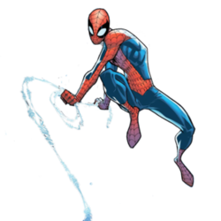

Homem-aranha
HOMEM-ARANHA(Spider-Man)
O Homem-Aranha (Spider-Man), o alter ego de Peter Parker, é um super-herói que aparece nas revistas em quadrinhos publicadas pela Marvel Comics. Criado pelo escritor/editor Stan lee e pelo escritor/artista Steve Ditko, o Homem-Aranha apareceu pela primeira vez na Amazing Fantasy#15, durante a Era de Prata dos Quadrinhos.
Lee e Ditko conceberam o personagem como um órfão que foi educado e criado pela sua tia May Parker e o seu tio Ben Parker em Nova Iorque e que, enquanto adolescente, tem de lidar com as lutas diárias normais da sua idade, em adição às lutas que tem como combatente do crime. Para combater seus inimigos, os criadores deram-lhe superforça e superagilidade, a capacidade de aderir na maioria das superfícies, a habilidade de disparar teias de aranha através de mecanismos montados nos pulsos (inventados por ele próprio e batizados de "lança-teia" — web-shooters) e a reação precognitiva ao perigo chamada "sentido-aranha". Peter Parker adquiriu seus poderes após ter sido picado por uma aranha radioativa.
A Marvel fez aparecer o Homem-Aranha em várias séries de revistas em quadrinhos, a primeira e mais longa chamada The Amazing Spider-Man. Ao longo dos anos, Peter Parker evoluiu de um nerd do ensino médio tímido e lerdo para um estudante universitário problemático, mas extrovertido, para um professor casado e, no final dos anos 2000, um fotografo independente (freelancer). Na década de 2010, junta-se aos Vingadores e ao Quarteto Fantástico, duas das equipes de super-heróis mais populares da Marvel. Na história de 2012–2014, Peter Parker morre enquanto sua mente está no corpo do seu inimigo Dr. Octopus; Octopus vive dentro do corpo de Parker, ficando com o papel de Homem-Aranha em The Superior Spider-Man, até regressar ao seu próprio corpo.[3] Separadamente, a Marvel também publicou livros com versões alternativas do herói, incluindo Spider-Man 2099, que conta as aventuras de Miguel O'Hara, o Homem-Aranha do futuro; Ultimate Spider-Man, que conta as aventuras do adolescente Peter Parker num universo alternativo; e Ultimate Comics Spider-Man, que retrata o jovem Miles Morales, que toma o manto do Homem-Aranha depois deste ter supostamente morrido em Ultimate.